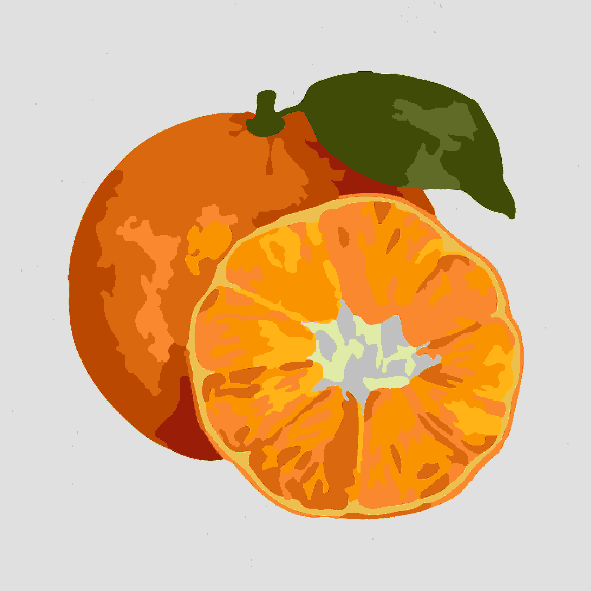

blog 3 detail
December 8, 2025
How to Pick the Perfect Sai Nam Peung Orange for a Sweet and Juicy Bite
Sai Nam Peung oranges are cherished for their unique blend of sweetness, juiciness, and refreshing aroma.
Native to Thailand, these premium citrus fruits are a favorite in homes and markets alike. But how can you ensure you’re picking the best ones? Whether you're shopping for a quick snack, fresh juice, or culinary creations, this guide will show you how to identify the tastiest Sai Nam Peung oranges every time.
Why Sai Nam Peung Oranges Are Special
Known for their thin skin, vibrant orange hue, and incredibly juicy flesh, Sai Nam Peung oranges are a staple in Thai cuisine and culture. Their flavor profile—a delicate balance of sweetness with just a hint of tang—makes them stand out from other varieties. With their high vitamin C content and versatile uses, these oranges are as nutritious as they are delicious.
Step-by-Step Guide to Picking the Best Sai Nam Peung Oranges
Follow these steps to select the juiciest and most flavorful oranges:
1. Examine the Skin
Look for vibrant, thin skin that’s free of blemishes or excessive scarring. While small imperfections are normal, deep cuts or mold spots should be avoided.
2. Check the Weight
Pick up several oranges and compare their weights. Heavier oranges typically have more juice, which means better flavor and freshness.
3. Feel the Texture
Gently squeeze the orange. It should feel firm with a slight give. Avoid overly soft oranges, as they’re likely overripe.
4. Smell the Orange
Bring the orange close to your nose. A fresh Sai Nam Peung orange will have a sweet, pleasant aroma. If there’s no fragrance or it smells off, move on to another option.
5. Ask the Vendor
When in doubt, ask the vendor about their stock. They may provide insights on which batch is the freshest or ripest.
How to Store Sai Nam Peung Oranges for Maximum Freshness
Once you’ve picked the perfect oranges, proper storage is key to maintaining their taste and quality: Room Temperature: If you’re consuming them within 2–3 days, keep them at room temperature in a cool, dry place. Refrigeration: For longer storage, place them in the refrigerator. Store them in a mesh bag or perforated container to allow airflow and prevent mold growth. Avoid Plastic Bags: Trapping moisture can lead to spoilage. Use breathable materials instead.
Wrapping Things Up
Selecting the perfect Sai Nam Peung orange doesn’t have to be a challenge. By focusing on color, weight, texture, and aroma, you can ensure you’re taking home the sweetest and juiciest fruits. Remember to store them properly and get creative in the kitchen to make the most of their incredible flavor. Don’t forget to look for juicy, good-quality Sai Nam Peung oranges and Ocean Honey varieties from E Koonmow Farm.